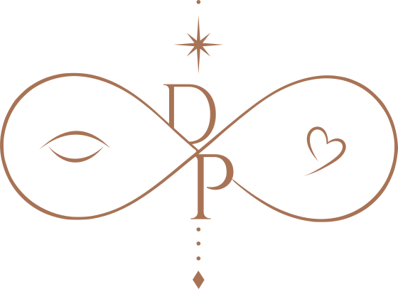

31 de julho de 2027

Encontrámo-nos num olhar,
reconhecemo-nos no amor
e escolhemo-nos para a vida inteira.
✦
As nossas memórias
Regista um momento especial deste dia connosco.
Escolhe como queres tirar a fotografia.
A abertura da câmara nativa depende do navegador e do telemóvel. Em alguns dispositivos, poderão surgir outras opções de seleção de imagens.
Escolhe a moldura
Protótipo: as fotografias ficam apenas no teu telemóvel. O envio para a cloud será adicionado na próxima fase.